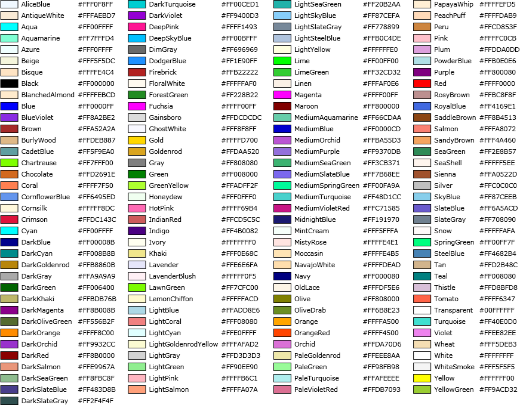

This External Color Picker dialog allows the user to pick a color from all of the “known” named colors.
The External Color Picker is a separate application (to overcome Dragon’s problem with voice access to the controls of modal dialogs). At launch, this application dynamically queries Windows’ built–in list of known colors (this list is unlikely to change but, if it does, this dialog will be aware of any changes). There are over one hundred sixty colors on this list; in the above image, they are presented in alphabetical order.
For making a selection by voice just say (if your Dragon requires click, “click” followed by) the name of any of the colors represented. Alternately, you can just say the number associated with the color swatch. When using the mouse, both the color swatch and the actual name label are clickable buttons.
Only color selections from this list of known colors are allowed. There is no provision for entering RGB values.

Both of the above images are static and will not change if the actual list of known colors changes.